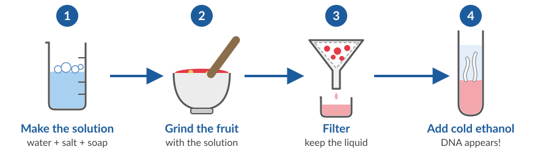
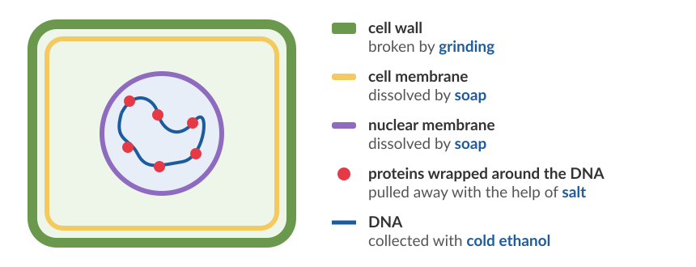
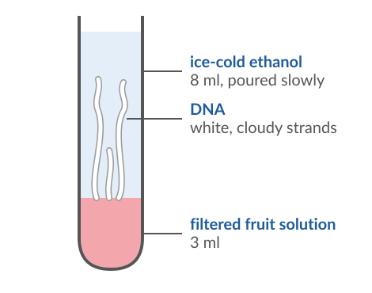
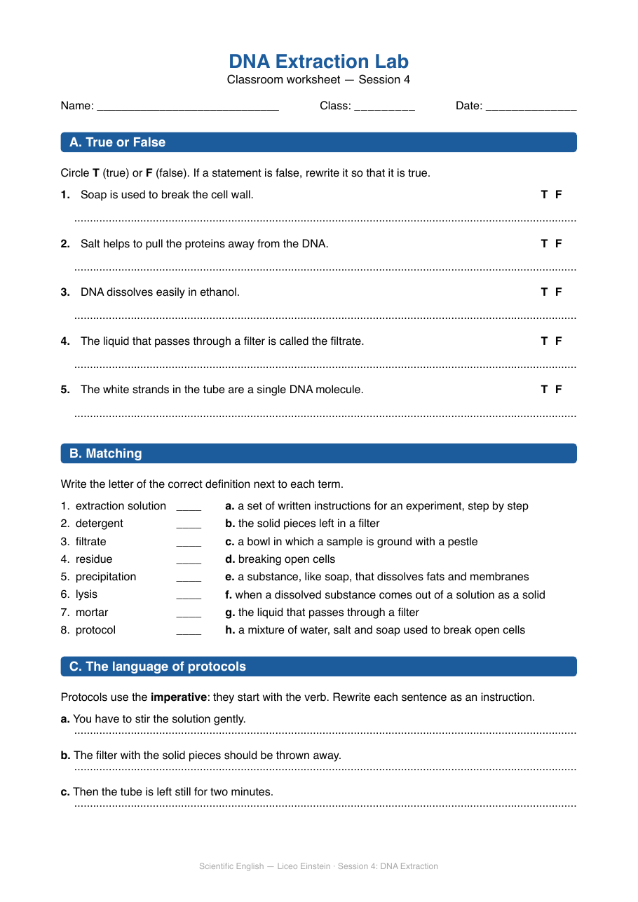

DNA Extraction
Session 4 — Scientific English
Warm-up: Review of Session 3 — Live Quiz
Scan the QR code to join the live quiz on Understanding DNA (10 questions).
Session 3 Worksheet: Let’s Correct It

Take out your worksheet Exploring DNA and a pen of a different colour.
- True or False (1–5)
- Matching (1–8)
- Complementary strands (1–4)
- The double helix story (a–f)
Worksheet — True or False
If false, rewrite the statement so that it is true.
| # | Statement | Answer |
|---|---|---|
| 1 | The double helix structure of DNA was discovered in 1869. | False → 1953 (DNA itself was isolated in 1869) |
| 2 | A nucleotide is made of a phosphate group, a sugar and a nitrogenous base. | True |
| 3 | In DNA, adenine (A) always pairs with guanine (G). | False → A pairs with thymine (T) |
| 4 | Most mutations are harmful. | False → most mutations are neutral |
| 5 | Most human cells contain 23 chromosomes. | False → 46 (23 pairs); only eggs and sperm have 23 |
Worksheet — Matching
| # | Term | Answer |
|---|---|---|
| 1 | nucleotide | d — the building block of DNA: phosphate + sugar + base |
| 2 | gene | f — a stretch of DNA with the instructions for one product, usually a protein |
| 3 | genome | a — the complete set of DNA of an organism |
| 4 | chromosome | h — a tightly packed structure of DNA and proteins; humans have 46 |
| 5 | base pair | b — two bases joined by hydrogen bonds, such as A–T |
| 6 | mutation | g — a change in the DNA sequence |
| 7 | replication | c — the process that copies DNA before a cell divides |
| 8 | histone | e — a protein that DNA is wound around, like thread on a spool |
Worksheet — Complementary Strands
1. TTAGCCATGC
→ AATCGGTACG
2. CGAATTCGTA
→ GCTTAAGCAT
3. A DNA sample contains 30 % A. What about T, G and C?
T = 30 %, G = 20 %, C = 20 %
4. Which DNA is harder to separate: rich in A–T or rich in G–C?
G–C: each G–C pair has 3 hydrogen bonds, A–T only 2
Worksheet — The Double Helix Story
| Event | Step of the scientific method | |
|---|---|---|
| a | Chargaff notices that A ≈ T and G ≈ C in every species | observation |
| b | Franklin and Gosling take X-ray photographs of DNA (Photo 51) | data collection |
| c | Watson and Crick propose a model of the structure of DNA | hypothesis |
| d | Their first model is wrong, so they build a new one | revising the hypothesis |
| e | The double helix model is published in Nature in 1953 | communicating the conclusion |
| f | In 1958 Meselson and Stahl check whether each new DNA molecule keeps one old strand | testing a prediction |
Today: See DNA with Your Own Eyes
The Plan

Four steps, about 30 minutes, using things you can find in a kitchen.
Where Is the DNA?

Make a Prediction
Note
Question: Which fruit gives more DNA from the same mass: banana or strawberry?
Write your hypothesis: “If we use …, then …, because …”
Keep it fair: what do we change, what do we measure, what do we keep the same?
| Independent variable | Dependent variable | Controlled variables |
|---|---|---|
| type of fruit | amount of DNA we see | mass of fruit, volume of solution, volume of ethanol, time |
Lab Safety
Warning
- Wear goggles
- Ethanol is flammable: no flames nearby
- Do not eat or drink anything in the lab
Tip
- Label your tubes: B (banana), S (strawberry)
- Work in pairs: one person reads, one person does
- Wash your hands at the end
Step 1: The Extraction Solution
50 ml water
2 tsp 2 teaspoons of cooking salt (NaCl)
1 tbsp 1 tablespoon of washing-up liquid (soap)
Stir gently until the salt dissolves. Avoid making foam.
Why These Ingredients?
| Ingredient | Its job |
|---|---|
| Soap | dissolves the membranes (made of fats called phospholipids), so the cell and the nucleus break open |
| Salt | pulls the proteins away from the DNA and neutralises the DNA’s negative charges, so the strands can clump together |
| Water | the solvent: everything else dissolves in it |
Step 2: Prepare the Sample
- Weigh about ⅓ of a banana
- Weigh the same mass of strawberries
- Grind each fruit in its own mortar
- Add the extraction solution and mix gently
Tip
Why gently? DNA molecules are very long and thin. Strong shaking breaks them into short pieces, which are harder to see.
Step 3: Filter
- Filter each mixture through a coffee filter
- Collect the liquid that passes through: the filtrate
- Throw away the filter with the solid pieces
Note
Vocabulary: filtrate — the liquid that passes through a filter. The solids left in the filter are the residue.
Step 4: Make the DNA Appear

- Transfer about 3 ml of filtrate into a clean tube
- Slowly pour 8 ml of ice-cold ethanol down the side of the tube
- Wait: do not shake!
- Observe: white, cloudy strands appear where the two liquids meet
Why Does the DNA Appear?
- DNA dissolves in water, but not in ethanol
- Ethanol pulls the water away from the DNA, so the DNA molecules clump together and come out of the solution
- This is called precipitation; cold ethanol works better
- Salt helps: with its charges neutralised, DNA clumps more easily
Note
What you see is millions of DNA molecules stuck together, not a single double helix: one helix is only 2 nm wide!
DNA Extraction: Full Protocol
- Mix 50 ml of water, 2 tsp of salt and 1 tbsp of washing-up liquid
- Stir gently until the salt dissolves (no foam!)
- Weigh about ⅓ of a banana
- Weigh the same mass of strawberries
- Grind each fruit in its own mortar
- Add the extraction solution and mix gently
- Filter each mixture through a coffee filter
- Collect the liquid: the filtrate
- Throw away the filter with the solid pieces
- Transfer about 3 ml of filtrate into a clean tube
- Pour 8 ml of ice-cold ethanol slowly down the side
- Wait two minutes: do not shake!
- Observe the white, cloudy strands
The Language of Protocols
Protocols use the imperative: start with the verb.
- Weigh the fruit.
- Grind the sample.
- Transfer 3 ml into a tube.
- Discard the filter.
Rewrite as instructions:
- You should take 50 ml of water.
- The ethanol is poured slowly.
- Then you have to wait two minutes.
→ Take 50 ml of water.
→ Pour the ethanol slowly.
→ Wait two minutes.
Record Your Results
| Fruit | Mass (g) | What do you see? (amount, colour, texture) |
|---|---|---|
| Banana | ||
| Strawberry |
Conclusion: Was your hypothesis supported? Which fruit gave more DNA, and why?
From the Kitchen to the Real Lab
| Our protocol | A real lab kit |
|---|---|
| Grind in a mortar | Grind frozen tissue, or shake with tiny beads |
| Soap + salt | Lysis buffer (detergent + salts) and enzymes that digest proteins |
| Coffee filter | A centrifuge spins the debris to the bottom |
| Cold ethanol | DNA sticks to a silica membrane, is washed with ethanol, then released in water |
| Cloudy white strands | Pure DNA, ready for analysis (e.g. sequencing) |
Recap
- To extract DNA we break the cell wall (grinding) and the membranes (soap)
- Salt pulls proteins away from DNA and helps it clump
- Filtering removes the solid debris
- Cold ethanol makes the DNA precipitate: we see millions of molecules together
- A fair test changes one variable (the fruit) and keeps the others the same
- Protocols are written in the imperative: weigh, grind, filter, pour
Classroom Exercise: DNA Extraction Lab

Worksheet handed out on paper in class. It covers:
- True or False: correct 5 statements about the extraction
- Matching: match 8 lab terms (filtrate, residue, precipitation, lysis…) to their definitions
- The language of protocols: rewrite sentences in the imperative
- The order of the protocol: put the 8 steps in the right order
- Your experiment: hypothesis, variables, results and conclusion for banana vs strawberry
Scientific English — Liceo Einstein